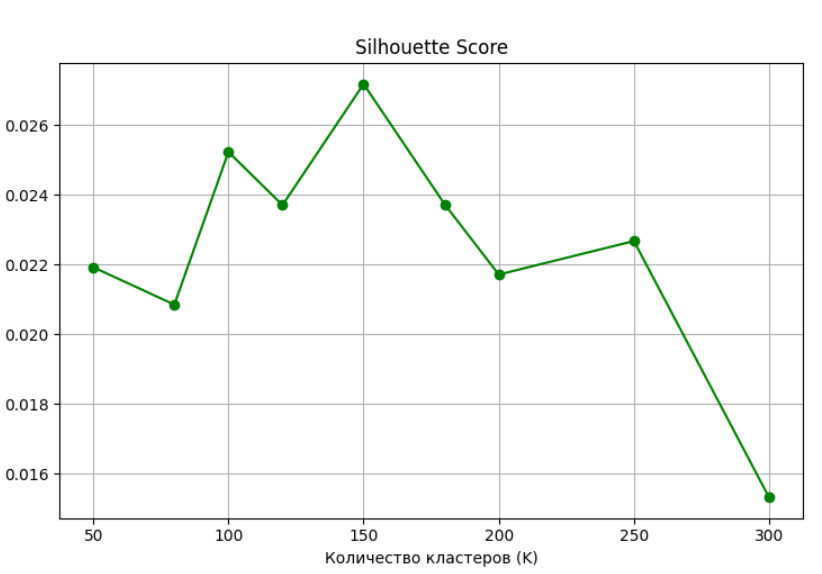

Agentic Active Learning
Contrastive Learning для дедупликации текстов
Базовые эмбеддинг-модели находят тематически похожие тексты, но часто ошибаются в их смысле. Например, «Бензин подорожал» и «Бензин подешевел» имеют высокое косинусное сходство, хотя смысл противоположный.
- Цель: научить модель сближать настоящие дубликаты
- Цель: раздвигать похожие, но разные по смыслу тексты
- Инструменты: LLM-Агент (GigaChat), MNRL, TripletLoss
EDA: Исследование данных
15,819
Всего текстов
0 пропусков, 0 точных дублей3.46
Слов в среднем
От 1 до 12 слов (26 символов)156
Мягких дублей
Разница в регистре/пробелахАнализ длины текстов
Самый короткий текст: «общение/приветствие» (1 слово, 19 символов).
Самый длинный текст: «изменение в парке Ленина: убраны старые горки...» (12 слов, 75 символов).
Тексты очень короткие. Это означает, что модель будет часто ошибаться, так как у нее нет контекста. Слова вроде «уборка» и «снег» будут давать высокое сходство, даже если речь идет о разных событиях.
Анализ разметки
Размечено 5,231 пара (3,141 уникальный текст).
Все тексты из разметки на 100% присутствуют в основном датасете.
- 3,863 — не дубликаты (73.8%)
- 1,368 — дубликаты (26.2%)
Наблюдается сильный перекос в сторону не-дубликатов. При обучении это нужно учитывать, чтобы модель не выучила правило «все тексты разные».
Примеры мягких дубликатов (требуют склейки):
- автомобиль мерседес ↔ автомобиль Мерседес
- Акция Елка желаний ↔ акция Елка Желаний
- беспилотная и ракетная опасность ↔ Беспилотная и Ракетная опасность
- беспилотная опасность ↔ Беспилотная опасность
- блокировка колёс автомобилей без номеров ↔ Блокировка колёс автомобилей без номеров
Проблема коротких текстов
Средняя длина — 3.46 слова. Модель видит только отдельные слова и не улавливает контекст. Это приводит к огромному количеству ложноположительных срабатываний (False Positives).
Дисбаланс классов
В разметке не-дубликатов в 3 раза больше, чем дублей. Для обучения (например, TripletLoss) нам нужно очень внимательно формировать батчи, чтобы позитивных и негативных примеров было поровну.
Угроза утечки данных
Наличие 156 мягких дублей означает, что при случайном разбиении на Train/Test одинаковые тексты могут попасть в обе выборки. Это завысит метрики. Необходима группировка (Union-Find) перед разделением.
Векторизация текстов
Модель: intfloat/multilingual-e5-large
Мы используем одну из лучших мультиязычных моделей на данный момент. Она переводит текст в вектор длиной 1024 числа (эмбеддинг).
Зачем нужен префикс passage: Модели семейства E5 обучались особым образом. Им нужно явно указывать, что перед ними документ (passage), а не поисковый запрос (query). Без этого префикса качество эмбеддингов падает.
Зачем мы делаем нормализацию?
Мы используем параметр normalize_embeddings=True. Это приводит длину каждого вектора ровно к 1 (L2-нормализация).
Зачем это нужно: В таком пространстве косинусное сходство (Cosine Similarity) математически равно скалярному произведению векторов (Dot Product). А считать скалярное произведение в библиотеках (например, в FAISS) в десятки раз быстрее, чем косинусное расстояние. Это критически ускоряет поиск дубликатов.
Размерность и скорость
На выходе мы получаем матрицу размером [15819, 1024]. Сохранение её в файл .npy позволяет нам не прогонять тексты через нейросеть каждый раз заново, что экономит часы работы GPU.
Готовность к кластеризации
Нормализованные векторы — это идеальное пространство для KMeans и агента. Агент будет искать ближайших соседей (по сути, перемножать векторы), чтобы найти те самые Hard Negatives.
Кластеризация и фолды
Чтобы избежать утечки данных (Data Leakage) и обеспечить честную проверку, мы объединили дубликаты и распределили целые смысловые блоки по 5 фолдам.
1. Исходные тексты
У нас есть 15,819 текстов. Каждый текст — это точка в 1024-мерном пространстве.
2. Union-Find (Дубли)
Склеиваем дубли и мягкие дубли. 15,819 текстов сжались до 14,933 групп. Из них 535 групп содержат больше одного текста.
3. K-Means (150 кластеров)
Объединяем группы по смыслу в 150 кластеров. Это позволяет распределить целые смысловые блоки по фолдам без пересечений.
Примеры объединенных групп (Union-Find):
- Группа 17: рыбная ловля ↔ рыбная добыча
- Группа 45: безопасность на горке ↔ безопасность горки ↔ безопасность в зоне тюбинга
- Группа 128: трагедия под лёд ↔ Трагедия под лёд
- Группа 595: поведение участников дискуссии ↔ поведение участников обсуждения
- Группа 620: причины ДТП ↔ причина ДТП

Почему K-Means (K=150)?
Мы сравнили алгоритмы: Agglomerative дал ужасный Silhouette Score (0.0028), а HDBSCAN отправил 52.6% текстов в «шум». K-Means победил, потому что гарантирует 100% покрытие данных.
Что такое Silhouette Score? Это метрика (от -1 до 1), показывающая, насколько объекты внутри кластера похожи друг на друга и не похожи на другие кластеры. Значение 0.027 — нормальное для коротких текстов, так как их смысловые границы размыты.
Что такое Inertia? Это сумма квадратов расстояний от точек до центров их кластеров (чем ниже — тем плотнее). Метод локтя показал, что K=150 — оптимальная точка, где Inertia перестает резко падать.
Разбиение на фолды и сплиты
Главная задача этого этапа — исключить утечку данных (Data Leakage). Если один и тот же текст (или его дубль) попадет в Train и Test одновременно, модель просто запомнит его, и метрики будут завышены.
5
Фолдов
Сбалансированы по размеру0%
Утечек данных
Все группы целы1,368
Проверенных дублей
Все 100% в одном сплитеРазмеры фолдов
Все 15,819 текстов были равномерно распределены по 5 фолдам. Благодаря жадному алгоритму (самый большой кластер в самый пустой фолд), разница в размерах минимальна.
| Фолд | Количество текстов |
|---|---|
| Fold 0 | 3,168 |
| Fold 1 | 3,165 |
| Fold 2 | 3,162 |
| Fold 3 | 3,160 |
| Fold 4 | 3,164 |
Размеры сплитов внутри фолдов
Каждый фолд делится на Train (обучение), Validation (для агента и анализа ошибок) и Test (отложенная проверка). Пропорции примерно 70% / 15% / 15%.
| Fold | Train | Val | Test |
|---|---|---|---|
| 0 | 2,225 | 471 | 472 |
| 1 | 2,229 | 471 | 465 |
| 2 | 2,215 | 474 | 473 |
| 3 | 2,218 | 472 | 470 |
| 4 | 2,348 | 350 | 466 |
Проверка целостности
Мы прогнали скрипт, который проверил все 1,368 пар размеченных дублей.
Результат: 1368 из 1368 пар находятся в одном и том же фолде и в одном и том же сплите (Все True). Это гарантирует, что модель не подсмотрит ответы во время тестирования.
Баланс классов по сплитам (%)
Разметка сохраняет примерное соотношение дублей и не-дублей во всех выборках.
| Сплит | Дубликаты | Не дубликаты |
|---|---|---|
| Train | 42.4% | 57.6% |
| Validation | 45.5% | 54.5% |
| Test | 62.0% | 38.0% |
* В тесте доля дублей выше (62%), что делает проверку еще более строгой для модели.
Метрики оценки
После каждой итерации обучения мы должны понять, стало ли эмбеддинговое пространство лучше. Для этого мы используем набор стандартных метрик ранжирования и контрастивного обучения.
Главная метрика: Gap (Разрыв)
Хотя мы считаем все перечисленные метрики, за основу мы берем Gap — разницу между средним сходством позитивных пар и средним сходством негативных пар.
Gap = Mean(Pos_Sim) - Mean(Neg_Sim)Почему именно Gap? Наша задача — это Contrastive Learning. Мы хотим, чтобы модель сближала дубли (Pos_Sim рос) и раздвигала похожие, но разные тексты (Neg_Sim падал). Gap напрямую измеряет этот процесс. Если Gap растет, значит модель учится разделять смыслы. Если мы видим, что Gap на Frozen Set вырос с 0.0475 до 0.1431 — это железное доказательство успеха.
Инструменты агента (Tools)
Агент (GigaChat) не работает вслепую. У него есть API из 15 инструментов. Он сам решает, какой из них вызвать, читает результат и делает выводы. Это разделяет инструменты на три группы: диагностику, поиск данных и действия.
1. Технические тулзы (Диагностика Validation)
Когда вызывает: В самом начале итерации.
Зачем и какой вывод: Агент смотрит, каких ошибок больше. Если много FP (модель путает разные тексты), он понимает, что нужно искать больше "жестких негативов". Если много FN — нужно искать пропущенные дубли.
Когда вызывает: После матрицы ошибок.
Зачем и какой вывод: Чтобы глазами посмотреть, на каких темах модель "плавает". Агент может увидеть, что все ошибки в теме "БПЛА" или "уборка снега".
Когда вызывает: Для анализа.
Зачем и какой вывод: Понять, какие темы для модели абсолютно не связаны, но могут быть связаны логически.
Когда вызывает: В начале итерации.
Зачем и какой вывод: Найти редкие темы, которых мало в обучении. Агент понимает: "О, у меня мало данных про экологию, надо поискать пары оттуда".
Когда вызывает: Для глубокого анализа.
Зачем и какой вывод: Найти системные проблемы (например, "модель ошибается на всех текстах с отрицанием").
Когда вызывает: Со 2-й итерации.
Зачем и какой вывод: Оценить, помогло ли предыдущее обучение, или модель деградировала (Catastrophic Forgetting).
Когда вызывает: Точечно.
Зачем и какой вывод: Понять, почему модель ошиблась на конкретной паре, посмотрев её "соседей".
Когда вызывает: После обновления модели.
Зачем и какой вывод: Проверить, изменилось ли поведение модели на старых данных (сравнение версий).
2. Генеративные тулзы (Поиск в Train)
Когда вызывает: Главный инструмент поиска.
Зачем и какой вывод: Найти "врагов" — тексты, которые модель считает одинаковыми (например, "бензин подорожал" и "подешевел"). Эти пары нужны для обучения раздвижению.
Когда вызывает: Главный инструмент поиска.
Зачем и какой вывод: Найти "серую зону", где модель не уверена. Эти пары дают максимальный прирост при разметке (Active Learning).
Когда вызывает: Для поиска пропущенных дублей.
Зачем и какой вывод: Найти пары, которые модель ошибочно раздвинула (например, "ДТП" и "авария на дороге"). Их нужно сблизить.
Когда вызывает: Для диверсификации выборки.
Зачем и какой вывод: Чтобы модель не переобучилась на одной теме (например, только на уборке снега), а знала про политику, экономику и т.д.
Когда вызывает: Для поиска сложных кейсов.
Зачем и какой вывод: Найти граничные случаи, которые требуют экспертной разметки Оракула.
3. Управляющие тулзы (Действия)
Когда вызывает: После вызова генеративных тулзов.
Зачем и какой вывод: Агент фиксирует свой выбор. Скрытый буфер перехватывает тексты, чтобы LLM их не исказила.
Когда вызывает: В самом конце сбора.
Зачем и какой вывод: Получить чистые данные для обучения модели.
Baseline: оценка базовой модели
Что такое Baseline?
Baseline (базовый замер) — это оценка качества модели intfloat/multilingual-e5-large до какого-либо дообучения. Мы просто берем стандартную, нетронутую модель, прогоняем через нее наши тестовые данные и считаем метрики.
Это наша отправная точка. Без нее мы не сможем понять, принесло ли наше обучение (Triplet Loss, MNRL, работа агента) хоть какую-то пользу.
Метрики ранжирования на Test-фолдах
| Fold | Recall@1 | Recall@5 | Recall@10 | Recall@50 | Precision@1 | Precision@5 | Precision@10 | MRR | Pos_Sim | Neg_Sim | Gap |
|---|---|---|---|---|---|---|---|---|---|---|---|
| Test F0 | 0.4583 | 0.6667 | 0.7083 | 0.7083 | 0.4583 | 0.1583 | 0.0875 | 0.5355 | 0.9728 | 0.9537 | 0.0191 |
| Test F1 | 0.7273 | 0.9091 | 0.9091 | 0.9091 | 0.7273 | 0.2364 | 0.1212 | 0.8058 | 0.9727 | 0.9173 | 0.0553 |
| Test F2 | 0.6842 | 0.7368 | 0.7368 | 0.7368 | 0.6842 | 0.1895 | 0.0947 | 0.7111 | 0.9878 | 0.9725 | 0.0153 |
| Test F3 | 0.7105 | 0.8158 | 0.8684 | 0.8684 | 0.7105 | 0.2421 | 0.1289 | 0.7586 | 0.9764 | 0.9352 | 0.0412 |
| Test F4 | 0.5455 | 0.7273 | 0.7576 | 0.7576 | 0.5455 | 0.1515 | 0.0848 | 0.6293 | 0.9728 | 0.9570 | 0.0159 |
| Mean | 0.6252 | 0.7711 | 0.7961 | 0.7961 | 0.6252 | 0.1956 | 0.1034 | 0.6881 | 0.9765 | 0.9471 | 0.0294 |
Проблема: Высокое сходство для всего
Обрати внимание на колонки Pos_Sim (0.9765) и Neg_Sim (0.9471). Базовая модель считает, что почти все тексты в датасете очень похожи друг на друга (сходство выше 0.94). Для коротких текстов это настоящая катастрофа.
Крошечный Gap (0.0294)
Разница между настоящими дублями и просто похожими текстами составляет всего 2.9%. Из-за этого метрики ранжирования (Recall@1, MRR) очень низкие: модель ставит на первое место случайные тексты, которые просто имеют общие слова.
Зачем нам дообучение?
Нам нужно "раздвинуть" пространство. Наша цель — сохранить Pos_Sim на уровне ~0.95, но обрушить Neg_Sim до ~0.80. Только когда Gap вырастет (например, до 0.10–0.15), модель начнет понимать смысл, а не просто совпадение слов. Именно для этого мы будем использовать Triplet Loss, MNRL и нашего агента.
Эксперимент 1: Triplet Loss vs MNRL
Логика и настройка агента
Для первого эксперимента мы настроили агента (GigaChat) на четкую последовательность действий. Мы убрали из промпта тулзы-заглушки (которые возвращали фейковые данные), чтобы агент работал только с реальными инструментами.
Мы жестко задали ему алгоритм: сначала диагностика (4 технические тулзы), затем поиск (5 генеративных тулзов), затем сдача 400 пар и запуск Оракула для разметки.
Пример логирования мыслей агента
Агент не просто вызывал функции, он "думал" перед каждым шагом, что позволяет нам контролировать процесс:
Часть 1: Triplet Loss (Базовый замер)
Мы обучили модель на 46 парах дублей, используя классический Triplet Loss (Anchor, Positive, Negative). Результат на тестовых фолдах:
| Fold | Recall@1 | Recall@5 | Recall@10 | Recall@50 | Precision@1 | Precision@5 | Precision@10 | MRR | Pos_Sim | Neg_Sim | Gap |
|---|---|---|---|---|---|---|---|---|---|---|---|
| Test F0 | 0.4583 | 0.6667 | 0.7083 | 0.7083 | 0.4583 | 0.1583 | 0.0875 | 0.5355 | 0.9728 | 0.9536 | 0.0192 |
| Test F1 | 0.7273 | 0.9091 | 0.9091 | 0.9091 | 0.7273 | 0.2364 | 0.1212 | 0.8058 | 0.9726 | 0.9173 | 0.0554 |
| Test F2 | 0.6842 | 0.7368 | 0.7368 | 0.7368 | 0.6842 | 0.1895 | 0.0947 | 0.7111 | 0.9878 | 0.9725 | 0.0153 |
| Test F3 | 0.7105 | 0.8158 | 0.8684 | 0.8684 | 0.7105 | 0.2421 | 0.1289 | 0.7586 | 0.9764 | 0.9351 | 0.0413 |
| Test F4 | 0.5455 | 0.7273 | 0.7576 | 0.7576 | 0.5455 | 0.1515 | 0.0848 | 0.6344 | 0.9728 | 0.9569 | 0.0159 |
| Mean | 0.6252 | 0.7711 | 0.7961 | 0.7961 | 0.6252 | 0.1956 | 0.1034 | 0.6891 | 0.9765 | 0.9471 | 0.0294 |
Вывод: Triplet Loss почти не изменил ситуацию. Средний Gap остался на уровне 0.0294. Модель не смогла сдвинуть негативы (Neg_Sim остался высоким — 0.9471), потому что 46 пар — это слишком мало для 500M-параметров модели. Нам нужна более агрессивная функция потерь.
Часть 2: MultipleNegativesRankingLoss (MNRL)
В соответствии с планом, мы заменили функцию потерь на MNRL. Она использует все остальные тексты в батче как негативы, что дает модели гораздо больше сигнала для обучения. Мы провели перебор батчей, чтобы найти оптимальный:
| Batch Size | Gap после обучения | Комментарий |
|---|---|---|
| 16 | 0.1400 | Хороший результат, стабильное обучение. |
| 32 | 0.1430 | Лучший результат. Идеальный баланс. |
| 64 | 0.0800 | Просадка. Слишком большой батч. |
Почему мы не пошли выше 64?
1. Лимит памяти (T4): Модель e5-large тяжелая. При попытке поставить батч 128 или 256, видеопамять (15 ГБ) переполняется, и Colab выдает ошибку OutOfMemoryError. Обучение физически невозможно.
Почему батч 64 дал худший результат?
2. Природа MNRL: Эта функция потерь использует другие элементы в батче как негативы. У нас всего 46 позитивных пар. Если мы ставим батч 64, то весь наш датасет помещается в один батч. Негативов почти не остается, и функция теряет смысл. Батч 32 — золотая середина.
Итоговая таблица MNRL (Batch Size 32)
| Fold | Recall@1 | Recall@5 | Recall@10 | Recall@50 | Precision@1 | Precision@5 | Precision@10 | MRR | Pos_Sim | Neg_Sim | Gap |
|---|---|---|---|---|---|---|---|---|---|---|---|
| Test F0 | 0.7083 | 0.7500 | 0.7500 | 0.7500 | 0.7083 | 0.1833 | 0.0917 | 0.7228 | 0.9387 | 0.8516 | 0.0871 |
| Test F1 | 0.6667 | 0.9091 | 0.9091 | 0.9091 | 0.6667 | 0.2424 | 0.1212 | 0.7704 | 0.9367 | 0.7326 | 0.2041 |
| Test F2 | 0.6316 | 0.7368 | 0.7368 | 0.7368 | 0.6316 | 0.1895 | 0.0947 | 0.6716 | 0.9741 | 0.9348 | 0.0394 |
| Test F3 | 0.7105 | 0.8947 | 0.8947 | 0.8947 | 0.7105 | 0.2579 | 0.1368 | 0.7831 | 0.9509 | 0.7539 | 0.1970 |
| Test F4 | 0.5152 | 0.7273 | 0.7576 | 0.7576 | 0.5152 | 0.1515 | 0.0848 | 0.6268 | 0.9455 | 0.8998 | 0.0457 |
| Mean | 0.6465 | 0.8036 | 0.8096 | 0.8096 | 0.6465 | 0.2049 | 0.1059 | 0.7149 | 0.9492 | 0.8345 | 0.1146 |
Ключевое решение: MNRL
Сравнив две таблицы, мы видим колоссальную разницу. Triplet Loss дал средний Gap 0.0294, а MNRL (с батчем 32) разогнал его до 0.1146 (почти в 4 раза выше).
MNRL заставил модель реально раздвинуть негативы: Neg_Sim упал с 0.9471 до 0.8345, при этом Pos_Sim остался высоким. Метрика ранжирования MRR выросла с 0.6891 до 0.7149, а Recall@1 увеличился.
Наше решение: Мы полностью отказываемся от Triplet Loss для дальнейших экспериментов. Все последующие итерации (с агентом, порогами и Replay Buffer) будут использовать только MNRL с размером батча 32.
Эксперимент 2
Здесь будут результаты работы агента-оркестратора и порогов (в разработке).
Эксперимент 3
Здесь будут результаты Replay Buffer и защиты от Catastrophic Forgetting (в разработке).
Эксперимент 4: Замороженный Embedding Space
Что это такое и зачем он нужен?
Чтобы объективно оценивать, как меняется модель от итерации к итерации, мы создали Замороженный набор (Frozen Set).
Мы взяли 1000 случайных пар из тренировочного пула (ровно 500 настоящих дубликатов и 500 не-дубликатов). Этот набор никогда не участвует в обучении. Мы просто прогоняем через него модель после каждой итерации и смотрим на изменение Gap.
Почему нельзя смотреть только на Test?
Test-фолды показывают обобщающую способность на новых темах. Но Test-выборки маленькие (от 19 до 38 пар с дублями). Из-за этого метрики на них могут сильно скакать (шум).
Замороженный набор дает стабильную, чистую картину именно в том семантическом пространстве, которое мы пытаемся обучить.
Динамика Gap на замороженных 1000 парах
| Итерация / Модель | Gap (до обучения) | Gap (после обучения) | Прирост (Δ) |
|---|---|---|---|
| Baseline (e5-large) | — | 0.0475 | — |
| Triplet Loss (400 пар) | 0.0475 | 0.0476 | +0.0001 |
| MNRL Batch 32 (400 пар) | 0.0475 | 0.1431 | +0.0956 |
* Таблица будет дополняться по мере проведения следующих итераций (Эксперименты 2 и 3). Выводы по динамике Embedding Space будут сформулированы после завершения всех запланированных этапов.
Данные
Здесь будут ссылки на скачивание датасетов и моделей.